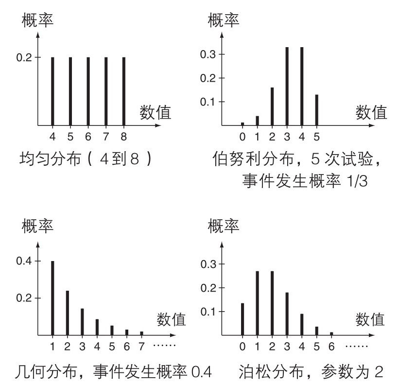
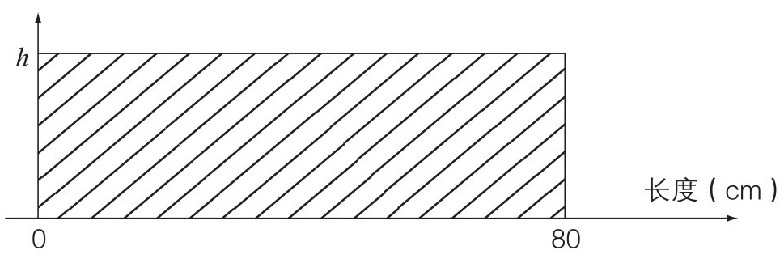
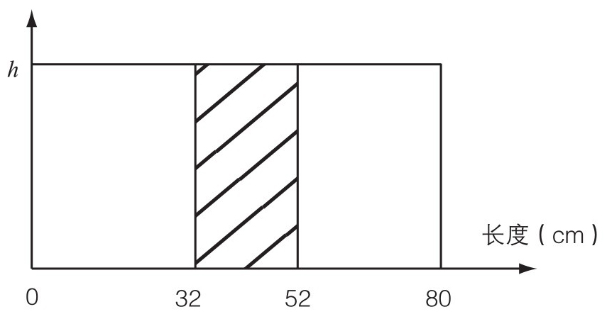
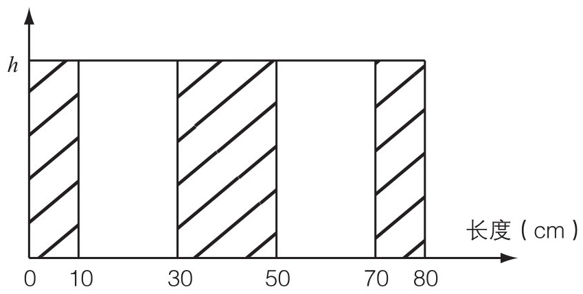
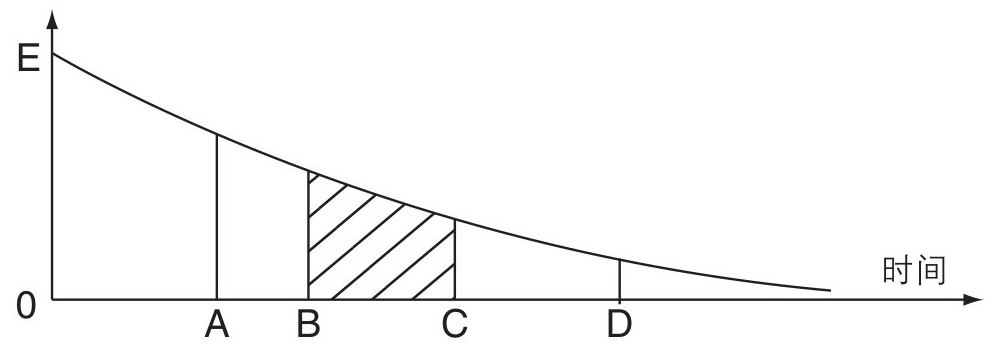
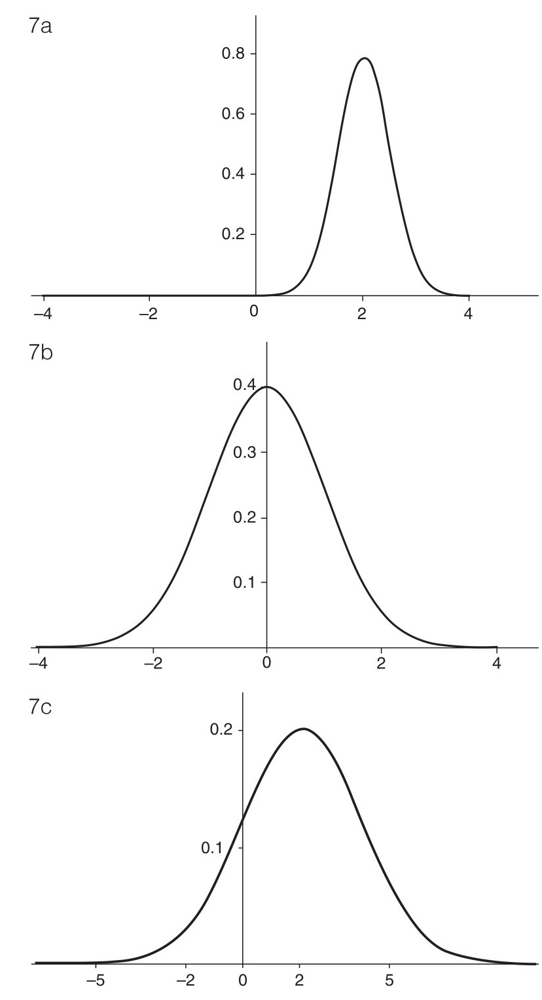

对于以概率作为结果的任意试验——买彩票、投注赛马、相亲、接受医学治疗，我们用分布 这个词来详细说明其所有可能的结果，以及与它们相关的概率。我们讨论泊松分析——大量重复试验中多少稀有事件会发生——的时候提到过这个词。
“分布”是分析概率试验中结果变化范围的中心概念。坦率地说，我们需要知道可能的结果的范围。为了给出这些结果概率的合理数值，我们必须讲清楚我们的假设，并且期望它们对于我们想要考察的试验是合适的。
离散分布
首先，我们来看看那些可能的结果能够被写成一个列表的情况，每个结果都有它们自己的概率。术语离散分布 (discrete distribution)适用于这种情况。
最简单的情况就是我们认为结果具有相同可能性时计算结果的数量。这里使用均匀分布 (uniform distribution)这个术语，因为总体的概率均匀地分散在各个结果上。许多试验都被认为满足均匀分布——轮盘赌、掷色子、扑克牌、选择彩票中的中奖号码等。精确的计数给出了合适的答案。
术语“伯努利试验”描述了一系列发生概率均为常数的独立试验。在伯努利试验次数固定的情况下，有一个简单的公式叫作二项分布 (binomial distribution)，分别给出了事件发生恰好0、1、2……次的概率。这个公式只依赖于试验的次数和事件发生的概率。当你依次浏览这些结果的时候，它们的概率先是升高到一个最大值，然后逐渐降至0。泊松分布也遵循这个模式。
我们能计算20次掷色子中数字6出现次数的二项分布；或者一个学生对30道多选题中的5个选择随机作答的时候，蒙对个数的二项分布。但是我们不能 预测一个桥牌选手的13张手牌里梅花张数的概率：虽然每一张单独的卡片都有1/4的概率是梅花，但是连续的牌不是独立的，因为下一张牌是梅花的概率会被所有前面的结果影响。
永远要留意(通常是小号字)附属细则。使用二项分布需要3个条件：固定试验次数，每个事件与其他事件相互独立，并且事件发生的概率是常数。
在一系列伯努利试验中，事件首次发生的时候经过了5轮试验的概率是多少？这种情况发生的唯一方式就是前4次试验中事件都未发生，随后1次试验中事件发生；因为所有的试验都是独立的，问题的答案就是将这些结果分别的概率乘在一起，给出了一个令人愉快的简介表达式，这就是所谓的几何分布 (geometric distribution)。
事件首次发生需要恰好1、2、3……次试验的概率稳定地下降。下一个概率值等于将现在的概率值乘以一次事件未发生的概率，一个小于单位1的固定值，每次都是这样。因此，无论事件发生的概率是多大，事件首次发生时经过的试验次数的最可能的值就是1。
假设在板球比赛中，连续的击球构成了伯努利试验。一位投球手，将事件发生理解为他投球成功，他可以乐观地想：他开始投球的时候，下一次投球成功最可能的就是这一次；相反，一个具有相同视角的击球手就得听天由命地接受他这一局最有可能的持续时间就是他面对这一个球的时间。(就算是最好的击球手，记录表明他们最有可能的总得分总是0!)

图4 一些常见的离散分布
图4举例说明了一些常见的离散分布。对于每一个可能的数值，竖线的高度给出了它的概率，并且这些高度的和总是单位1。
连续分布
我们如何拓展古典的概率观点来解决在一个长度为80cm的木棍上随机选取一个点的试验？可能的结果组成一个连续统 (continuum)，而不只是一个列表。
“随机”意味着所有单独的点都具有相同的概率值。但如果这个相等的值超过了0，那么，在取了足够多的点之后，它们的总概率就会超过单位1，这是不可能的。每个单独的点的概率一定是0，我们也不能使用像图4一样的图片了。我们需要将概率、片段或者区间相关联，而不是将概率和单独的点相关联。
为了对80 cm的木棍的每一部分一视同仁，所有具有相同长度的片段一定有相同的概率。想象一下将木棍砍成8个相等的片段：按照定义，一个“随机的”点落在每个片段上的概率一定相同，举例来说，落在20~30 cm的片段上一定具有1/8的概率。
图5a展示了下一步操作，这可以用口头禅“面积表示概率”表述。标注了h的水平线的高度是设定好的，这条线下阴影部分的面积是单位1，这呈现了一个事实，我们可以百分百地确定随机点落在区间0~80 cm中的某处。接着图5b展示了如何确定随机点落在32~52 cm的片段上的概率，只需要计算对应的阴影面积即可。简单地说，这个概率是1/4。
要得出随机选择的点落在木棍两端10 cm内，或者中间20 cm内的概率，我们就可以使用图5c，并且依据加法定理，要求的概率是三个阴影面积的和，也就是1/2。

图5a 阴影面积是单位1

图5b 落在32~52cm之间的概率是1/4

图5c 见正文
图6展示了对结果取连续值的另一些情况下相似的解决方式，例如一段特定的高速公路上下一次事故发生需要的时间。我们会在下面论证展示图片上的曲线在这种情况下是合理的，但核心观点是图线的尺度是特意选择好的，以至于标注了“时间”的直线以上，和以点E为起始端点的曲线以下的总面积是单位1，因为我们可以百分百确定我们考察的这段时间一定取非负值。

图6 连续分布
时间至少是B但不大于C的概率就是阴影的面积。我们可以用类似的方式得到考察的时间落在任意给定区间内的概率，还能像之前一样根据加法定理，得到落在更复杂区间内的概率。
一个能按照这种方式生成概率的曲线被称为概率密度 (probability density)。已知面积的计算方式是“长乘以宽”，任何直线的宽度都是0。因此图6中在点A或者点D的竖直线的“面积”都是0，所以这两个单独的点具有0值的概率，就像之前提过的那样。但是点A的密度曲线比点D高，所以点A附近 的值比点D附近的值更可能。简单地说，图片表明具有或高或低的概率的区域。在这里我们使用连续分布 (continuous distribution)这个术语。
在所有这些试验中，因为单独一个点具有的概率值为0，我们可以稍微草率一点：无论一个区间包括了两个端点或一个端点，抑或都不包括，结果的概率都是一样的。
为了限定一个概率密度，一条曲线一定必须具有两个特性：不能取负值，在曲线下的全部面积必须是单位1。这些保证了对概率的所有计算能得出合理的结果。
许多概率密度函数出现得足够频繁以至于可以被赋予名称。对于从给定的一个区间内选取随机点，密度函数在这个区间内完全平直，就像图5中的一样：简单地说，所有相同长度的片段具有相同的概率。再一次，我们叫它均匀分布 。
假设我们对一些特定事件在多长时间后发生感兴趣。例如，210 Pb是一种铅的不稳定同位素，“它的半衰期是22年”这个断言被印在物理教材上。它的意思是，如果我们有一块这种物质，22年后只有原来的一半保持原样，其余的都通过辐射衰变成其他物质了。
这块物质由巨量的原子组成，所有这些原子的行为都是独立的。如果关注单个原子，它通过放出一个粒子而衰变。我们不知道什么时候这个过程会发生，但是因为在22年内这块物质中的一半的原子都衰变了，所以这个特定的原子 在这个时间段内发生衰变的概率是50%。假设它在5年后还没有发生衰变：这时，它就是剩余的210 Pb块中的一个原子，所以它在未来22年衰变的概率也是50%，并且如果它在接下来的3年中没有发生衰变，情况也一样，以此类推。
一个给定的原子的衰变时间只有遵循所谓的指数分布 (exponential distribution)的时候，上述情况才能发生，它的概率密度的一般图形展示在图6中，曲线的高度按照确定的比率下降。类似的场景也应用在交通事故中：过去的一周内没有事故发生，那似乎不可能对未来的事故概率产生影响，所以我们预期交通事故下一次发生的时间也遵循指数分布。
这个分布和泊松分布密切相关。只要事件本质上是随机发生的——暴风雨中的闪电、细胞复制中的自发突变、顾客来到邮局——在固定的时间段内这样的事件发生的数目 倾向于遵循泊松分布，那么一对事件之间的等待时间 的概率分布就具有这种指数形式。
最重要的连续分布是我们已经提到过的高斯分布 。就像图7展示的那样，这个分布家族中的成员关于单独的一个峰对称，并且在两边快速下降，然而永远不会达到0。两个数字就可以告诉我们任意一个分布实例在这个家族中的归属：一个数字表示峰的位置，另一个数字描述散布程度——较小的散布值导致像图7a那样的高且窄的图形，较大的散布值给出像图7c那样的矮且宽的图形。这个家族成员的任何位置的概率都可以借由这两个数字来与图7b的分布相关联而得到，这个分布的峰在0，标准散布值为单位1。棣莫弗创制了对应数表之后，这些对应关系就很容易得到了。

图7 高斯分布
一个问题的再解决
你也许已经注意到了一个问题。已知期望的结果组成的集合是有限的，或者是一个像{1， 2， 3，…}这样的无尽的集合，那么即使这个集合中的一些成员的概率是0，任何概率是0的事件也不会发生。然而，对于连续分布 ，即使每个单独的点的概率是0，它们其中的一个在试验进行过程中也是会发生 的!我们不再能够认为“不会发生”与“概率为0”具有相同的意义。
为了解决这个问题，我们来考虑从装有100万块完全相同的大理石的盒子中随机选取一块。只有在提前猜对了结果的情况下，我们才会感到惊讶，因为猜对的概率只有一百万分之一。但是，无论抽中了哪块大理石，虽然的确出现了某个概率只有百万分之一的结果，但我们也不会感到惊讶。
把盒子做大一点——10亿块或100 000亿块大理石——实际产生结果对应的概率可以无限接近0——但是它的确发生了。这与在一条连续的线上选取一个点的过程并没太大区别：对于任意的点来说，它的概率是0，但是它们其中的一个的确将会发生。
我们接下来开始说明，在一个可重复试验中，如果猜对结果的概率是1/6，我们可以期望按顺序进行的6次试验中有1次猜对。将事件发生的概率除以100万，我们预期等待正确结果出现的次数就被乘上了100万。具有极小概率的结果的确会发生，但是越来越罕见。
如果概率下降到0，我们可以预期要等待比任意有限长都要长的时间——那它就是不会发生!在提前指定 的情况下，认为任何概率为0的事件都不会发生是合理的。
平均值
已知一个概率试验中结果的分布，我们就可以计算我们想要的任何概率。但是有些时候，所有的这些细节都成了障碍——只见树木，不见森林 [1] ：所以我们想要提取出分布的主要特征。
举例说明，假设可能出现的结果只有2、3和7，分别对应概率60%、10%、30%。我们预期在100次重复试验中，2这个值会出现大约60次，3出现大约10次，7为剩下的30次。所有这些数值的和是120 + 30 + 210 = 360，所以所有这100个结果的平均值是360/100 = 3.6。这个值就是数值2、3和7的加权和 (weighted sum)，权重就是它们的概率。
无论我们有什么样的分布，相似的计算都会得出大量重复试验结果的集中趋势。“集中趋势”是一个宽泛的词，对于这类计算的结果，我们更喜欢使用平均值 (mean)这个术语。可能有一些捷径：如果值在一个范围内均匀地分布，平均值就在两个端点的正中间；在一系列伯努利试验中事件发生的次数的平均值就是试验次数和事件发生概率相乘。
掷一个公正的色子，得到4的概率是1/6。所以在600次投掷过程中，我们应该可以得到大约100个4：简单计算表明，连续出现的4之间的平均间隔是6。大小为1/6的概率导致平均间隔是6，这不是一个巧合。任何间隔的长度就是下一个事件发生的等待长度，所以在一系列伯努利试验中，我们就有了令人愉快的结果：
等待一个事件发生所需的平均时间是事件发生的概率的倒数。
在连续分布中，想法是类似的，但是加权和是由一种名为积分 (integration)的数学方法来得出的。对于高斯分布，峰处就是平均值。按照整体特定的频率发生的随机事件发生的平均时间是一个指数分布：平均时间就是频率的倒数，这并不奇怪。
除了“平均”和“平均值”，术语“期望”和“期望值”也会被使用。掷一个公正的硬币12次，“期望”正面朝上的数目为6；掷一个公正的普通色子，“期望”得到的分数是3.5。当然正是因为一次投掷中反面朝上的期待值是0.5，我们实际上不能期望 得到一半的反面朝上!文字都很是奇妙。
平均值非常友好：和的平均值通常是平均值的和，无论不同的和是不是独立出现的。大数定律告诉我们，从长远看，平均值占据主导：如果你买一张彩票花费1英镑，其中一半的钱都进入奖池中，那么，无论奖金的分配结构如何，你的平均 收益都是50便士，从(非常)长远看，这就是你能得到的。
离散程度
用一种简洁的方式描述一个分布的离散程度通常是有用的。我们可以计算每一个值和平均值的差值，然后得到这些差值的(适当地加权的)平均值。但是，就像所有计算上努力展示的那样，这种方法是不成功的：负的差值不可避免地抵消了正的差值，最终结果总是0。
但是无论一个差值是正是负，我们都可以在将它平方之后得到一个正的值。所以我们可以通过将这些平方值加权来得到离散程度。得到的这个值就叫作方差 (variance)。如果分布集中在平均值的附近，那么方差就会比较小；当有合理的原因使一些值距离平均值比较远的时候，方差就会变得很大。
当考虑以美元计收入的分布的时候，平方值的单位就是“平方美元”，不管它究竟是什么意思。将方差取算术平方根就可以得到原始计量中的单位，这就得到了标准差 (standard deviation)。
平均值和标准差合在一起，经常能给我们理解一个概率分布的快速且有用的方式。在高斯分布中，仅用这两个数字就足够计算所有的概率!就像点金石一样，当分布为高斯分布的时候，在大约68%的试验中，结果在平均值周围1个标准差范围内；在超过95%的试验中，结果在平均值周围2个标准差范围内；而400次中大约有一次结果是在3个标准差之外。
这些数字就是在第1章中给出的，我们能够有理由地期望事件发生的概率和事件发生的实际频率有多么接近的相关参考的基础：关键就是中心极限定理，它说明了作为大量随机成分的和而出现的数量预期接近遵循高斯分布。
在图7中，展示了3个高斯分布的概率密度函数，这几张图的平均值分别是2、0和2，标准差分别是1/2、1和2。
但是注意：虽然和的平均值总是平均值的和，但是对方差和标准差来说可不是这样。如果和的组成部分恰好是独立的——比如说在拉斯维加斯一家赌场7天分别的收益——那么和的方差就的确是分别的方差的和，否则就会偏高或者偏低。直接将标准差相加几乎不会给出任何有意义的结果。
极端值分布
在概率的某些应用场景中，我们关注的重点在于随机数量的最大值或者最小值。例如，线或者电缆的强度依赖于最弱的纤维；洪水防护设施要考虑的是下一个一百年中预期发生的最大规模的洪水；生存分析 (survival analysis)这个学科调查一段给定时间后的剩余人口。极端事件可能很少发生，但是当它们发生了的时候，结果就变得很重要了。
最简单的看似可信的模型假定存在一些独立的随机变量，每个都分别遵循一个特定的分布。例如每一年中，对一家保险公司的索赔。对接下来的50年中它可能会收到的最大的总索赔额有多大，保险公司有一个经历了漫长的数学推导的可用结果：无论在每一年中索赔额如何变化，在很大的年代跨度中，最大索赔额一共只有三 个可能的种类，它们被称为极端值分布，具体的名字是弗雷歇(Fréchet)、冈贝尔(Gumbel)、韦布尔(Weibull)。有一个合理的数学原理，如果有一个关于最大值的理论，就一定有一个相对应的关于最小值的结果。所以如果感兴趣的东西是最小值，也存在相似的结论。
能够对这三种分布进行一些限制是非常有帮助的。通过估计极端值的平均值和方差，从三种分布中选择一种最接近于实际数据的，就能计算分布中的另一些概率的合理估计，比如真实情况中极端和破坏性事件的概率。
[1] 原文为“we can t see the wood for the trees”。